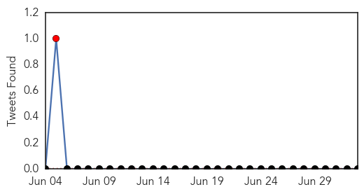
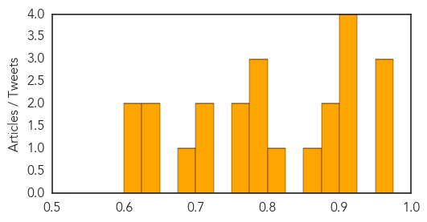
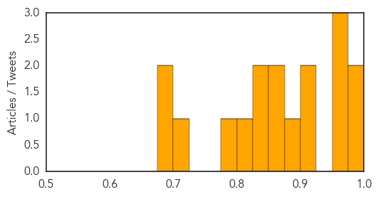

Measles
30-Day Web Trend
2 alerts, 0 warnings

30-Day Twitter Trend
1 alerts, 0 warnings

Article Locations

Article Confidences
Top Articles:
- 0.962
- Measles kills first patient in 12 years
- 0.958
- Measles Takes First American Life Since 2003 -- NYMag
- 0.957
- Measles killed a Washington woman
- 0.920
- Washington Woman Is First U.S. Measles Death in 12 Years
- 0.918
- Case for vaccination: First measles fatality in US in over a decade -
- 0.905
- Ebola vaccine trial…to be or not to be?
- 0.904
- First person to die of the measles in a dozens years
- 0.893
- Measles death in US is the first in 12 years
- 0.886
- Officials Confirm First U.S. Measles Death in 12 Years
- 0.857
- CORRECTED VERSION — UPDATE: Clallam County woman's death by measles is first in nation in 12 years and first in state since 1990 -- Port Angeles Port Townsend Sequim Forks Jefferson County Clallam Cou
- 0.814
- The US records its first measles death in 12 years
- 0.790
- A woman died in Washington
- 0.785
- Measles death in US: First fatality since 2003
- 0.776
- A woman dies of measles, and antivaccinationists think it’s a conspiracy – Respectful Insolence
- 0.761
- US Confirms First Measles Death In Over a Decade
- 0.751
- Washington Woman's Demise Is First In U.S. Since 2003
- 0.722
- Woman's death by measles is first in U.S. since 2003
- 0.722
- KinderCare requiring measles shots for infants’ caregivers
- 0.681
- Washington State Woman First To Die Of Measles In 25 Years
- 0.637
- Measles leads to 1st U.S. death in 12 years - Xinhua
- 0.630
- Fiji Times Online
- 0.621
- The first U.S. measles death since 2003
- 0.612
- Declining vaccine rates: Mostly a white problem
Top Tweets:
-
No tweets found for Jul 03, 2015
Dengue Fever
30-Day Web Trend
5 alerts, 5 warnings

30-Day Twitter Trend
3 alerts, 0 warnings

Article Locations

Article Confidences
Top Articles:
- 0.983
- Mosquito borne disease hits Townsville
- 0.978
- Asia dengue fever update: Philippines, Malaysia, Thailand, Vietnam and Singapore
- 0.957
- More dengue cases in American Samoa
- 0.954
- Dengue's tail's tale: How virus evolves to spread more efficiently
- 0.952
- Dengue`s tail`s tale: How virus evolves to spread more efficiently
- 0.913
- Dengue cases up in NorMin, 11 deaths recorded
- 0.900
- S'pore team closer to creating 4-in-1 'cocktail' to fight dengue, news, Health News, AsiaOne YourHealth
- 0.898
- Genetically Engineered Mosquitoes Reduce Dengue Transmitters by 95 Percent – Entomology Today
- 0.873
- Oxitec mosquito works to control Aedes aegypti in dengue hotspot
- 0.858
- Action plan to beat mosquito-borne diseases in Delhi
- 0.850
- Health Department has failed to contain diseases: BJP, CPI
- 0.830
- Researchers Edge Closer to Cure for Dengue Fever
- 0.809
- More dengue cases reported in Bishan North
- 0.795
- Health Ministry says local authorities not doing enough to curb dengue
- 0.706
- Local authorities criticised for not doing enough to curb dengue – BorneoPost Online
- 0.697
- MP: seek help from private medical colleges, students
- 0.692
- Asia Briefs: Dengue cases prompt warning in HK, Asia News & Top Stories
Top Tweets:
- 0.501
- Flavivirus news: More dengue cases reported in Bishan North - Channel News Asia: More dengue ca... http://t.co/7I2vxlT8tG pathogenposse